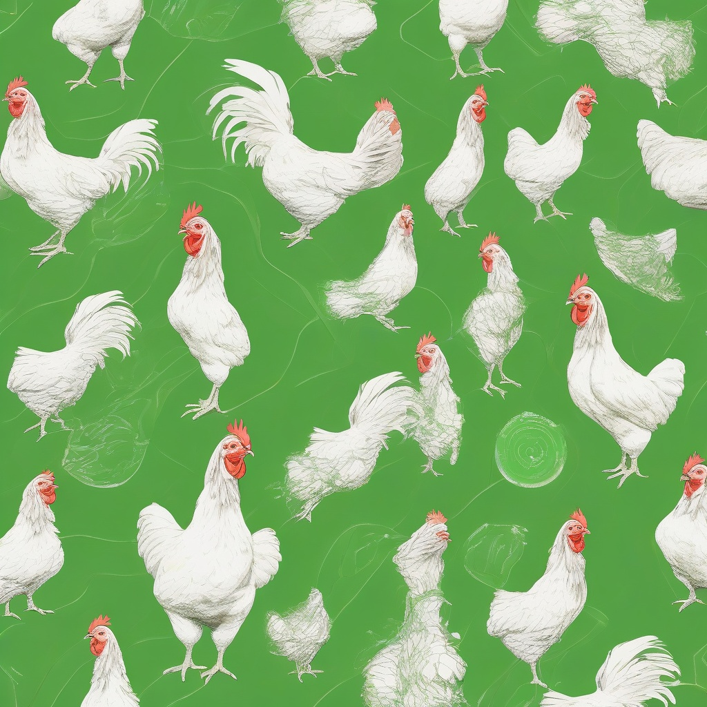
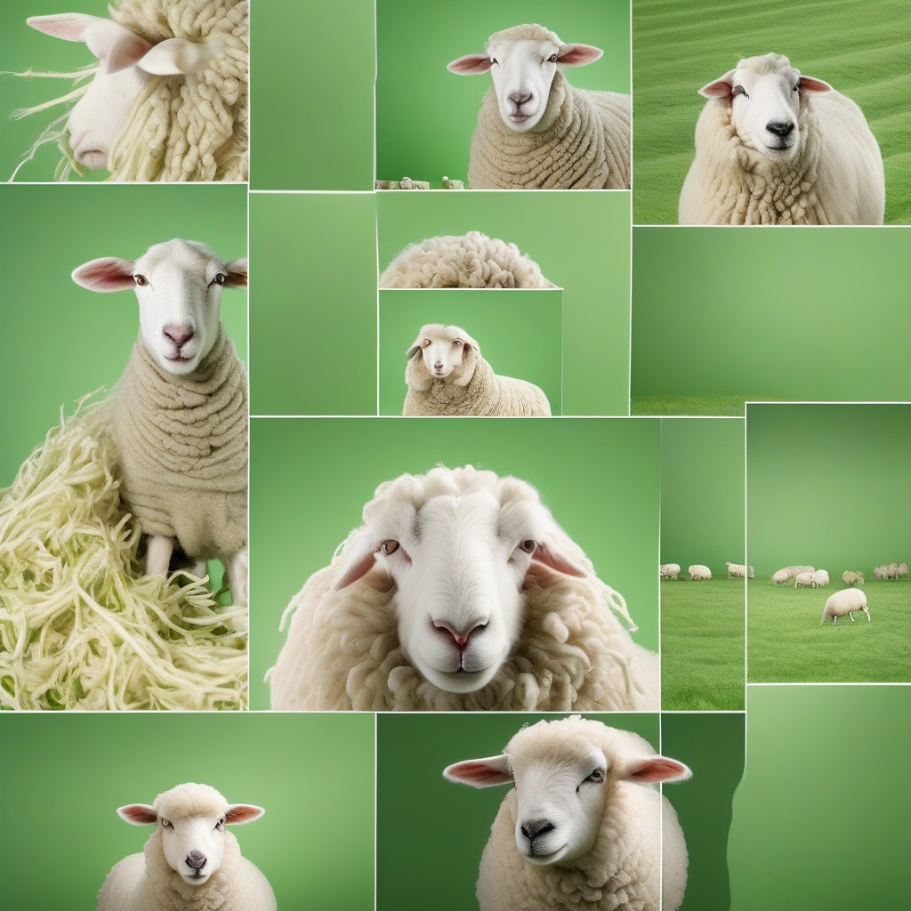

Livestock Health Diagnosis & Treatment
Get insights and diagnosis for common livestock diseases to keep your animals healthy.
Start DiagnosisLivestock Health Diagnosis
Diagnosis Result:
Common Livestock Diseases
Foot-and-Mouth Disease (FMD)

Affects cattle, sheep, goats, and pigs. Symptoms include fever, blisters on the mouth and feet. Vaccination is essential.
Newcastle Disease
Common in poultry, especially chickens. Symptoms include respiratory distress, drooping wings, and paralysis.
Mastitis
Affects dairy cattle. Symptoms include swelling and redness of the udder, reduced milk production. Proper hygiene can prevent it.
Peste des Petits Ruminants (PPR)
Affects goats and sheep. Symptoms include fever, mouth ulcers, and diarrhea. Vaccination is the best prevention.
Livestock Health Resources
Access detailed guides, manuals, and videos to help maintain your livestock's health.
View Resources